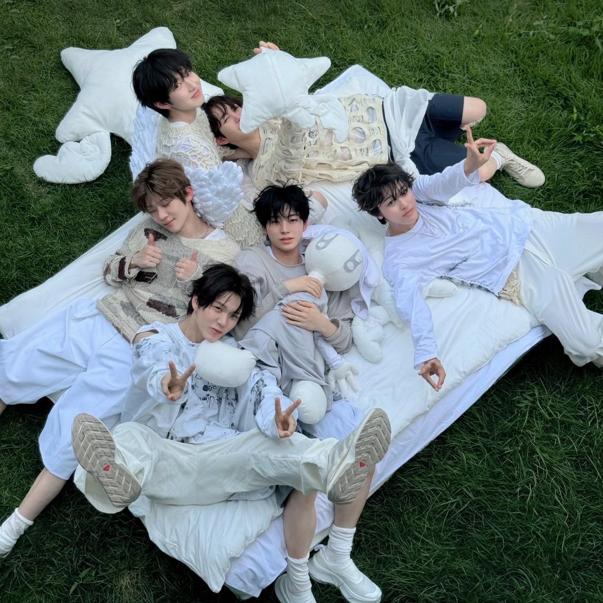
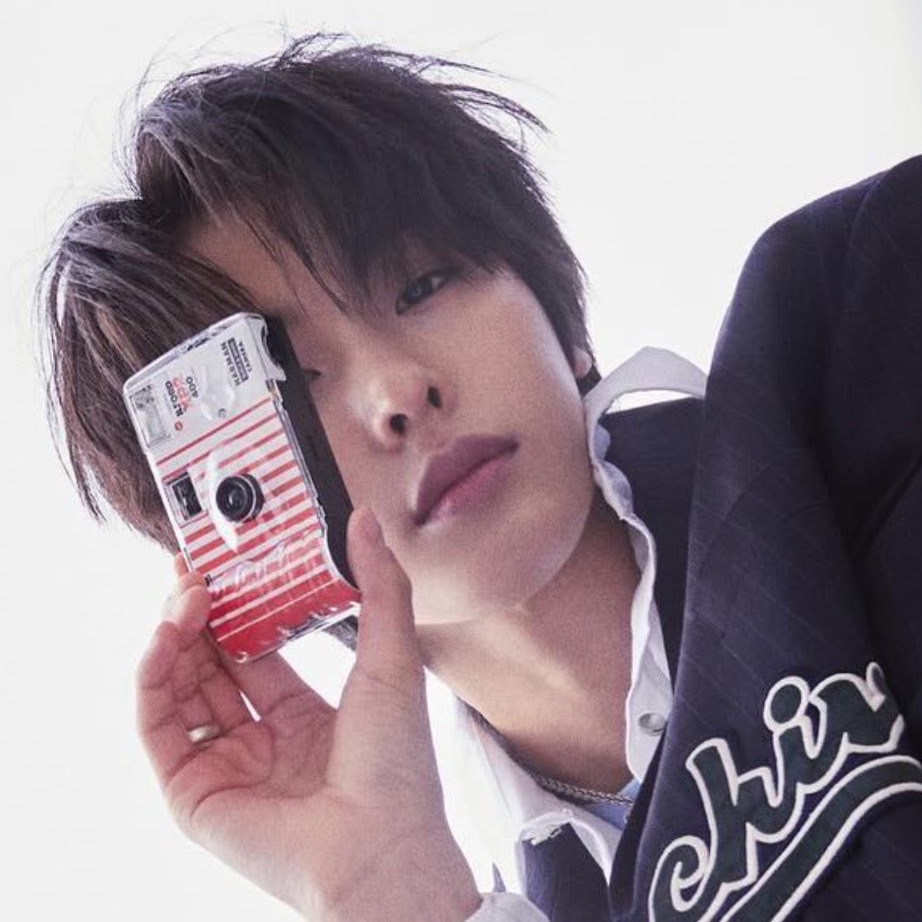

온리(Onri)組合
Riku和隊長Sion分別是隊內的二哥與大哥，彼此的舞蹈風格也非常強烈，兩人組合的化學反應深受粉絲喜愛。
↗ Tyla-water by Sion & Riku ↗ chopdaily-Last Last Mashup by Sion & Riku

NCT WISH
即時是在團體舞蹈短片裡，舞蹈也豪不遜色，以乾淨俐落、游刃有餘的舞蹈風格受粉絲喜愛。
↗ Famous Dex-PICK IT UP (feat. A$AP Rocky) ↗ dc:hook_dancekorea

隊外Challenge
即使是跳其他前輩的舞蹈也非常出色，總是能轉換成自己的風格，展現不一樣的魅力。
↗ TWS-If I'm S, Can You Be My N? ↗ Ten-Nightwalker ↗ NCT U-Baggy Jeans